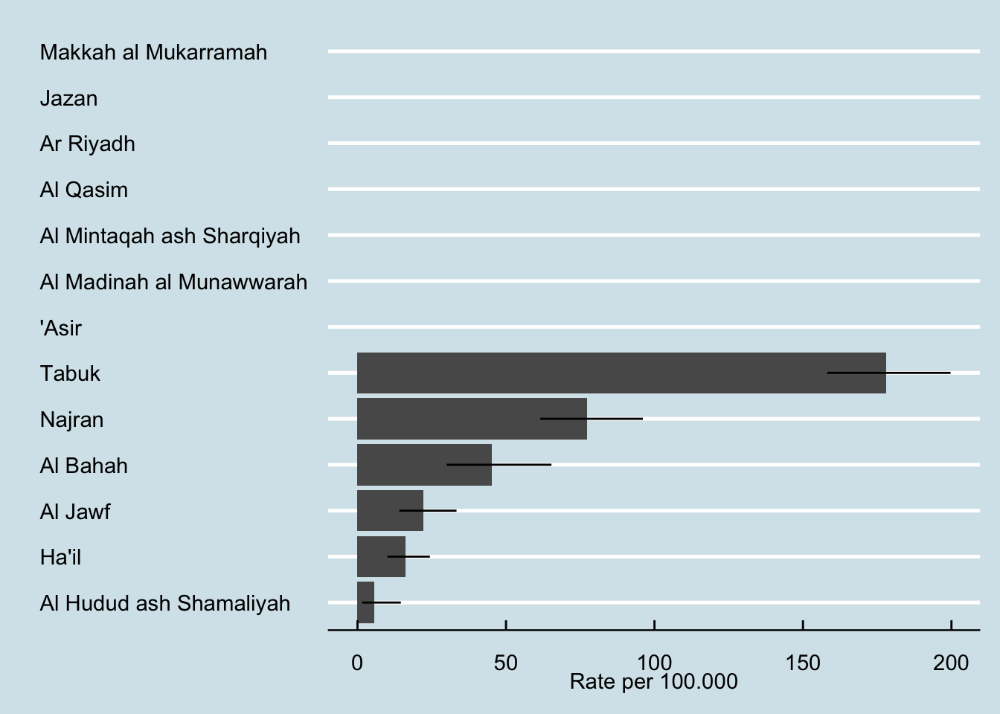

flowchart TD A[Data] --> B[population data] A --> C[smoking data] C --> D[[reclassify directorate names to regions]] --> E[[calculate age bands]] --> F[[calculate smoking counts]] B --> G[[calculate age bands]] --> H[[calculate population counts]] H --> I[[join datasets]] F --> I I --> J[calculate rates and ci]
6 Smoking
6.1 Workflow
6.1.1 load census population and create age bands
Code
## create age band
pops <- setDT(pops)[, `:=` (`18-44` = dplyr::between(age, 18, 44), `15+` = age >= 15, `80+` = age >= 80, age_band = cut(age, seq(0, 110, 5), right = FALSE))][]
pop_age <- pops[, .(n = .N, sumpops = sum(Population, na.rm = TRUE)), by = .(Region, age_band, Gender)][order(age_band)]
pop1844F <- pops[, .(n = .N, sumpops = sum(Population, na.rm = TRUE)), by = .(Region, `18-44`, Gender)][`18-44` == "TRUE" & Gender == "Female",]
pop15F <- pops[, .(n = .N, sumpops = sum(Population, na.rm = TRUE)), by = .(Region, `15+`, Gender)][`15+` == "TRUE" & Gender == "Female",]6.1.2 load smoking data and calculate age bands
Code
smok_age <- smoking[, `:=` (`18-44` = dplyr::between(age, 18, 44), `15+` = age >= 15, `80+` = age >= 80, age_band = cut(age, seq(0, 110, 5), right = FALSE))][]
smok_age_bands <- smok_age[, .(n = .N, smokers = sum(n, na.rm = TRUE)), by = .(Region, age_band, Gender)][order(age_band)]
smok1844F <- smok_age[, .(n = .N, smokers = sum(n, na.rm = TRUE)), by = .(Region, `18-44`, Gender)][`18-44` == "TRUE" & Gender == "female",]
smok15F <- smok_age[, .(n = .N, smokers = sum(n, na.rm = TRUE)), by = .(Region, `15+`, Gender)][`15+` == "TRUE" & Gender == "female",]6.1.3 join datasets and calculate rates
This step uses Byar’s method for confidence interval for rates
Code
smok_rates <- pop1844F |>
left_join(smok1844F, by = "Region") |>
phe_rate(x = smokers, n = sumpops)
smok_rates |>
dplyr::select(Region, smokers, population = sumpops, value, lowercl, uppercl) |>
flextable::flextable()Region | smokers | population | value | lowercl | uppercl |
|---|---|---|---|---|---|
'Asir | 366,324 | ||||
Al Bahah | 28 | 61,969 | 45.183882 | 30.017729 | 65.30573 |
Al Hudud ash Shamaliyah | 4 | 70,149 | 5.702148 | 1.553643 | 14.59976 |
Al Jawf | 23 | 103,536 | 22.214495 | 14.077587 | 33.33412 |
Al Madinah al Munawwarah | 387,944 | ||||
Al Mintaqah ash Sharqiyah | 877,403 | ||||
Al Qasim | 249,081 | ||||
Ar Riyadh | 1,609,493 | ||||
Ha'il | 22 | 136,642 | 16.100467 | 10.086571 | 24.37741 |
Jazan | 267,342 | ||||
Makkah al Mukarramah | 1,507,301 | ||||
Najran | 82 | 105,915 | 77.420573 | 61.572876 | 96.10050 |
Tabuk | 291 | 163,453 | 178.032829 | 158.162585 | 199.70848 |
Code
smok_rates |>
ggplot() +
geom_col(aes(reorder(Region, value), value)) +
geom_linerange(aes(x = Region, ymin = lowercl, ymax = uppercl)) +
coord_flip() +
labs(x = " ",
y = "Rate per 100.000")
